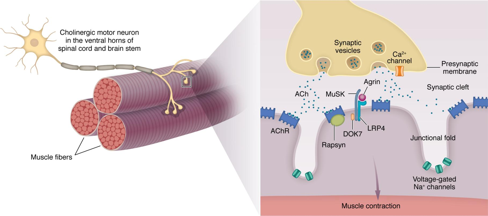
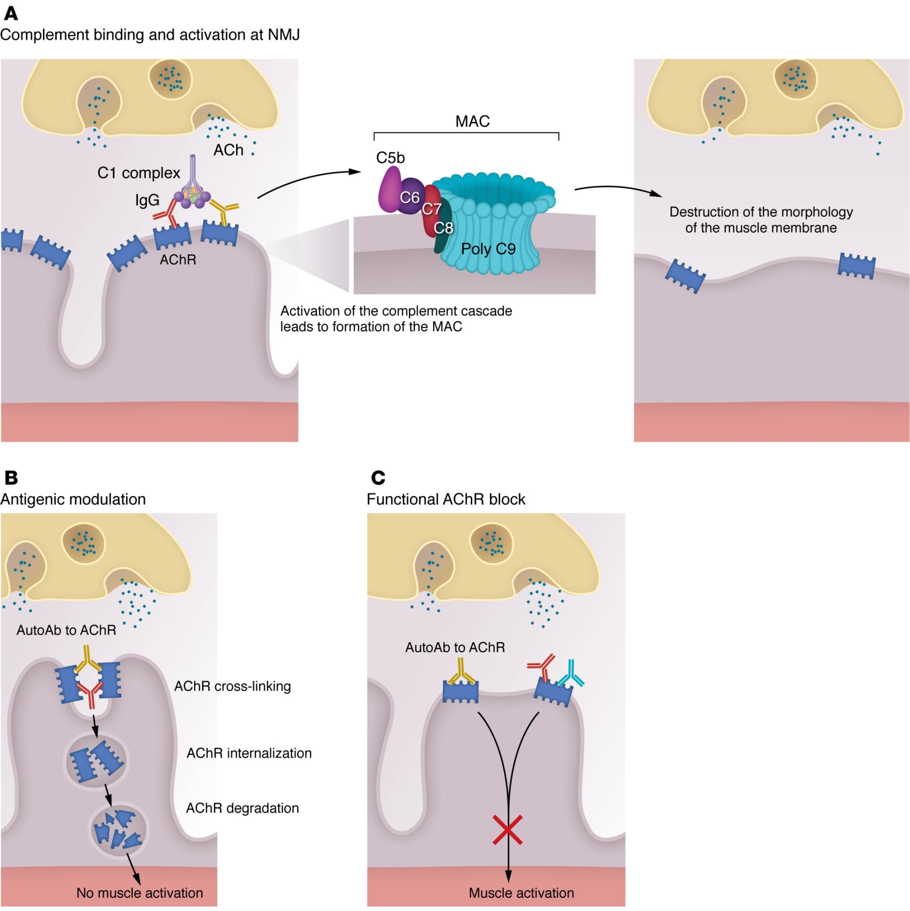
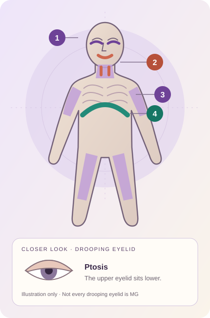

Small movements.
A remarkable conversation.
Lifting a cup. Looking up. Finishing a sentence. These ordinary actions depend on messages travelling from your nerves to your muscles.
Myasthenia gravis (MG) is an autoimmune condition: the immune system mistakenly targets the body’s own structures. In MG, this disrupts communication at the neuromuscular junction—the tiny meeting point between a nerve ending and a muscle. The result is muscle weakness. [1]
With MG, muscle strength can change with activity and rest.
Weakness often increases when an affected muscle is used repeatedly and may improve after a break. The pattern and severity differ between people. Feeling tired alone does not establish that someone has MG. [2]
Why talk about MG
with women aged 20–40?
For women studying, working or managing everyday responsibilities, changing muscle strength can be easy to misinterpret. This article focuses on women aged 20–40 in Singapore, while recognising that MG can affect anyone.
Read the age group in context. These are published clinical summaries, not Singapore registry counts for women aged 20–40. “Under 40” is not an exact 20–40 boundary or a prediction of an individual’s risk. It does not mean MG is common in most young women.
How a message
becomes movement.
A nerve uses electricity to carry a signal, then a chemical messenger to cross a tiny gap. The muscle turns that message into its own electrical signal. [3]
Where a nerve meets a muscle
Follow the nerve on the left, then look at the enlarged connection on the right.

Enlarge imageThe yellow nerve ending releases the small blue ACh dots. AChR marks the receptors on the purple muscle surface. The gap between nerve and muscle is the synaptic cleft.
© 2024 Kaminski, Sikorski, Coronel & Kusner. JCI 134(12):e179742. CC BY 4.0. Reproduced without changes; displayed at a different size.Decode the scientific labels
- NMJ
- Neuromuscular junction: the connection between a nerve and a muscle.
- ACh / AChR
- Acetylcholine, the messenger / its receptor, which receives it.
- Ca²⁺ / Na⁺
- Calcium / sodium ions, which help transmit the signal.
- Presynaptic membrane
- The surface of the sending nerve ending.
- MuSK, LRP4, agrin, DOK7 and rapsyn
- Proteins involved in organising or maintaining the receiving system.
- 1SIGNAL
A nerve signal arrives.
An electrical impulse travels along the motor nerve to its ending beside the muscle.
- 2SEND
The nerve releases ACh.
Calcium enters the nerve ending. This triggers tiny packets to release acetylcholine (ACh), a chemical messenger.
- 3RECEIVE
The muscle receives it.
ACh crosses the gap and binds to receptors on the muscle surface. These receptors are channels that open when activated.
- 4ACTIVATE
A muscle signal begins.
Sodium flows in. If the electrical change reaches a trigger level, a new signal spreads along the muscle.
- 5MOVE
The muscle contracts.
The muscle signal releases calcium from stores inside the muscle, allowing its pulling proteins to generate force. [4]
- 6RESET
The message is cleared.
An enzyme called acetylcholinesterase breaks down ACh. When stimulation ends, calcium returns to storage and the muscle relaxes. [3][4]
A little more science
ACh receptor channels allow sodium in and potassium out. The net electrical change is an end-plate potential. Reaching threshold starts a muscle action potential. Calcium entering the nerve and calcium released inside the muscle are separate events. ACh breakdown is rapid and overlaps with activation; the numbered steps simplify that timing. [3][4]
The message is sent.
The receiving side struggles.
In a common form of MG, immune proteins called autoantibodies target ACh receptors. They can disrupt the receiving side in three overlapping ways. [5]
Block
Antibodies interfere with ACh binding or receptor function, so affected receivers work less effectively.
Remove
Antibodies link receptors together. The muscle removes and breaks them down more quickly, leaving fewer receivers.
Damage
Antibodies activate complement—immune proteins that can damage the muscle’s receiving surface.
This explains AChR-antibody MG. Other forms involve targets such as MuSK or LRP4 and differ in their mechanisms. The three effects above can happen together; they are not a fixed sequence. [5]
MG under the surface
Three ways AChR antibodies disrupt the muscle’s receiving system.

Enlarge imageADamageComplement proteins injure the muscle membrane.
BRemoveLinked receptors are taken inside the cell and broken down.
CBlockAntibodies interfere with receptor activation.
The panels illustrate possible transmission failure. They do not mean every muscle fibre stops working. These effects can overlap and are not a fixed sequence.
© 2024 Kaminski, Sikorski, Coronel & Kusner. JCI 134(12):e179742. CC BY 4.0. Reproduced without changes; displayed at a different size.Decode the scientific labels
- IgG / AutoAb
- Antibodies / autoantibodies directed against the body’s own structures.
- MAC
- Membrane attack complex: complement proteins that form a pore and damage the receiving membrane.
- Antigenic modulation
- Antibody-driven removal and breakdown of receptors.
- Internalisation / degradation
- Taking receptors inside the cell / breaking them down.
Why repeated activity can make weakness worse
Normally, a muscle receives more signal than it needs to respond: a safety margin. MG reduces that margin. During repeated activity, ACh release can initially fall, and some muscle fibres may no longer receive enough signal to activate. Together, those failures reduce force. Rest may temporarily help transmission recover; it does not repair the immune problem. [6]
Imagine sending
a message to a phone.
The nerve is the sender. The muscle is the receiver. ACh is the message travelling between them.
Without MG: working receptors receive ACh, helping the muscle reach the level needed to respond.
When the connection works
Imagine the sender texts, “Lift the cup.” The receiving phone has working components, so it recognises the message and responds. In your body, ACh reaches receptors, helps trigger a muscle signal, and leads to contraction.
What changes with MG
Now imagine that parts of the receiving phone are blocked, missing or damaged. The sender can still send, but the receiving system is less reliable. In MG, fewer effective receptors and surface damage can leave the muscle with too little signal to respond consistently.
Why a break can help—but is not a repair
A pause between repeated messages can allow a response to return for a while. It does not replace the missing components. Similarly, rest may temporarily improve transmission in MG without removing the antibodies or curing the condition. [6]
Where the comparison ends: real messages cross the gap as chemicals, not Wi-Fi or text. MG is not a flat battery or a lack of effort. One real movement involves many nerve impulses and muscle fibres.
Notice the pattern.
Get the right help.
MG may affect different muscle groups. Symptoms can fluctuate, and not everyone has every symptom. [7]
Where weakness may appear
The pattern differs from person to person. Some people have symptoms limited to the eyes.

- 1Eyes and eyelids
- Weak eyelid muscles can cause drooping (ptosis). Weak eye-movement muscles can cause double vision.
- 2Face and throat
- Chewing, swallowing, speech or facial expressions may be affected.
- 3Neck and limbs
- Holding the head up, raising the arms or walking may become harder.
- 4Breathing muscles
- Weakness can cause breathing difficulty. Severe symptoms need urgent medical care.
Original schematic created for Signal Story with AI assistance, based on NHS symptom guidance [7]. It shows affected regions, not exact anatomy or a diagnostic test. The eye inset is an illustration, not a patient photograph.
Persistent or worrying symptoms need medical assessment. Other conditions can cause similar problems. A clinician may use antibody blood tests, nerve–muscle testing and imaging to help establish the diagnosis. [7]
Severe weakness of the breathing muscles can cause a myasthenic crisis, a medical emergency. [2]
Treatment can make a difference.
MG has no established cure, but treatments can improve muscle strength and control symptoms. Options include medicines that improve transmission, treatments that reduce harmful immune activity, and thymus surgery for selected people. A specialist tailors care to the type and severity of MG. [2]
Sources you can follow.
Public health information and scientific explanations. Links open in a new tab.
- SingHealth / National Neuroscience InstituteMyasthenia gravis: causes, symptoms & treatments ↗
Singapore clinical information; younger women, older men and all-age context.
- US National Library of Medicine · MedlinePlusMyasthenia gravis ↗
Age pattern, symptoms, diagnosis, emergency features and treatment.
- UTHealth Houston · Neuroscience OnlineSynaptic transmission at the neuromuscular junction ↗
- OpenStax · Anatomy and Physiology 2eMuscle fibre contraction and relaxation ↗
- Kaminski et al. · Journal of Clinical Investigation · 2024Myasthenia gravis: the future is here ↗
Receptor blockade, removal, complement damage and MG subtypes.
- Conti-Fine et al. · Journal of Clinical Investigation · 2006Myasthenia gravis: past, present, and future ↗
Reduced safety margin, repeated activity and weakness.
- NHSMyasthenia gravis ↗
Symptoms and when to seek medical assessment.
Image credits and permissions
The two published scientific diagrams are Figures 1 and 2 from: Kaminski, H. J., Sikorski, P., Coronel, S. I., & Kusner, L. L. (2024). Myasthenia gravis: the future is here. Journal of Clinical Investigation, 134(12), e179742. https://doi.org/10.1172/JCI179742.
© 2024 the authors. Reproduced under Creative Commons Attribution 4.0. The images are unaltered apart from their displayed size. Use does not imply endorsement by the authors or journal.
The body map, eye inset, phone illustrations and interface graphics were created for this project with AI assistance. No patient photographs, music or video are used.
An educational article by Kaushik. Article sources checked 25 October 2026; scientific images and captions checked 26 October 2026. This is general education, not a diagnosis or individual treatment advice.